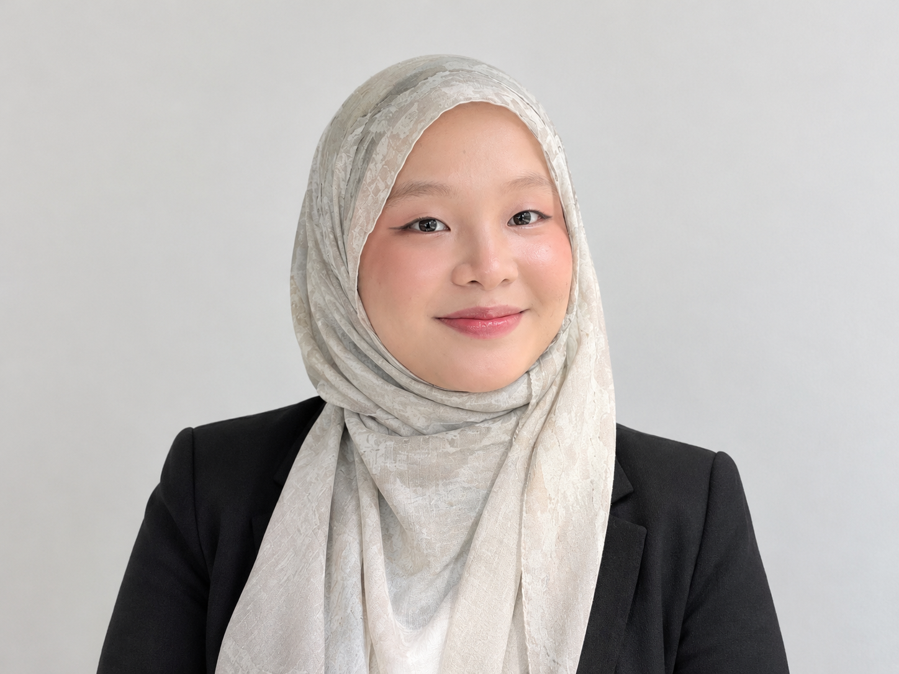

GET TO KNOW ME
About Me.
A little world of creativity, curiosity, and continuous growth.
Hi! I' am a third-year student at Universiti Malaysia Sarawak (UNIMAS),
Originally from Ranau, Sabah.
I'm 23 years old and passionate about exploring
creative and technical sides of multimedia.
I am interested in learning more about database management,
data analytics, digital design, and game development.
I enjoy exploring new skills and ideas that may help
me improve my knowledge.
